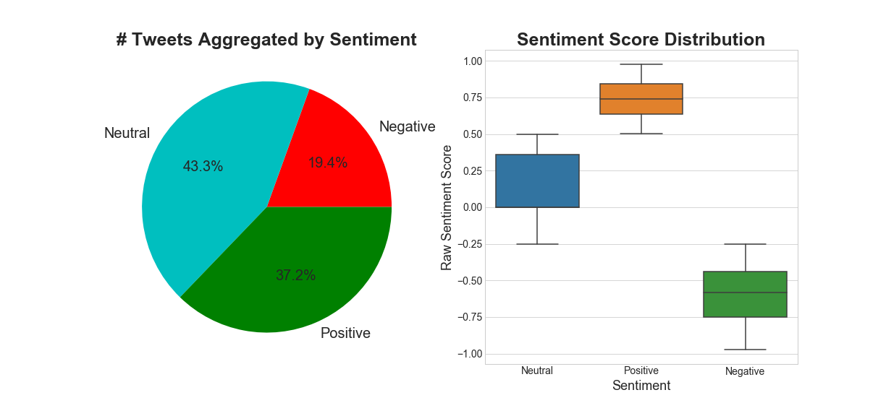
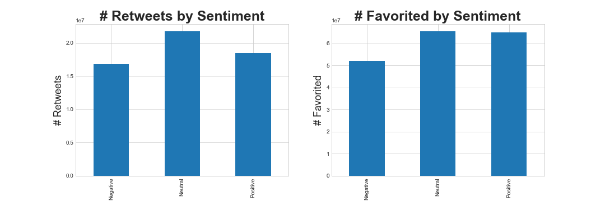
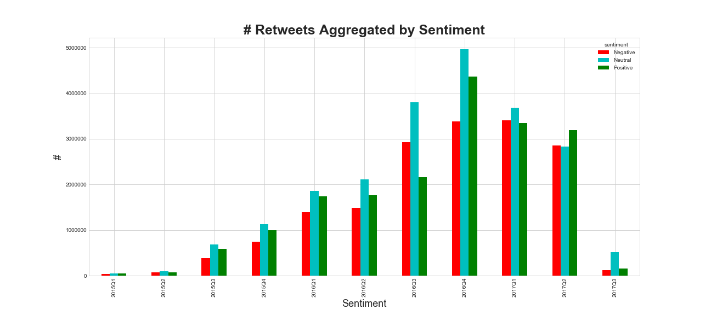
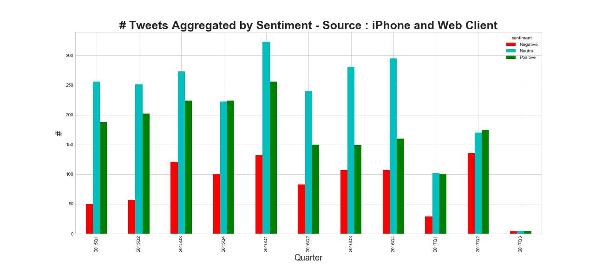

ADA
Trump's tweets
Twitter plays a crucial role in politics these days. Gone are the days of door-to-door campaigning and trying to reach the last man. Today, power is weilded by those who can tweet. A carefully worded 140 character phrase carries the ability to swing states and potentially change the course of an entire nation. The goal of our project is to analyse the impact of Twitter on society and understand how ideas are spread across a network.
In order to investigate this question, our proposal is to analyse the tweets posted by Trump on Twitter over time to discover what was the main focus of his campaign, how it changed and how the society reacts to his discourses and proposals.
The Trump Twitter Archive is a project that has been collecting Trump's tweets since 2009 but the main focus of this project will be the period of his campaign.
Data Overview
- Comments about data structure
- # of tweets per time chart
- # tweets by device
- Comments about day of week
- Comments about day of week that is good to tweet
- Word Cloud by semestre
Writing Style
- Chart about count of !#url?
- Chart style by device
- Funny close words
- Cluster TNSE / isomap
Sentimental Analysis
Humans are "generally" sentimental and emotional beings. Analysing the sentiment of someone's tweets' could tell us a great deal about the general thought process of the person. Here, we will present an in-depth analysis of the sentiments expressed by Trump on Twitter.
Let us look at the distribution of the number of tweets classified based on the sentiments expressed in them. The raw sentiment scores lie between -1 and 1, with -1 denoting the most negative sentiment and vice versa.
Although majority (~43%) of tweets have been classified as neutral, a significant (~20%) are negative. Let us look at some of these tweets :
The FAKE & FRAUDULENT NEWS MEDIA is working hard to convince Republicans and others I should not use social media - but remember, I won....
— Donald J. Trump (@realDonaldTrump) July 1, 2017
Watched low rated @Morning_Joe for first time in long time. FAKE NEWS. He called me to stop a National Enquirer article. I said no! Bad show
— Donald J. Trump (@realDonaldTrump) June 30, 2017
Just finished a very good meeting with the President of South Korea. Many subjects discussed including North Korea and new trade deal!
— Donald J. Trump (@realDonaldTrump) June 30, 2017
Our new American Energy Policy will unlock MILLIONS of jobs & TRILLIONS in wealth. We are on the cusp of a true energy REVOLUTION. pic.twitter.com/Up9WkJnYgw
— Donald J. Trump (@realDonaldTrump) June 29, 2017
It would also be interesting to see the temporal pattern in the distribution of the number of tweets based on the sentiment expressed in them.
While the number of tweets by Trump has decreased in general, the proportion of negative tweets has gone up, and more so, after he was elected as the president. Let us now look at how these tweets were perceived by the public. We will use the total number of retweets and likes (favorited) as a metric.
 It is interesting to note that while the total number of negative tweets is only about ~20% in total, the number of retweets and favorited/likes are almost similar across the three categories of sentiments. This could be indicative of the fact that people are more gullible and supportive towards negative tweets by Trump.
Source Analysis
It is a well known fact that Trump's official Twitter handle @realDonaldTrump is also accessible by his media and other supporting teams. Trump has been personally known to use an "Android" phone while his team either uses the Twitter Web Client or an iPhone. Since the Twitter API allows us to differentiate between the "source" of a tweet, it would be interesting to see if there are any differentiating patterns based on the source.
Trump and his team have clearly used numerous devices/sources for connecting with the world on Twitter. Here is a comprehensive list ordered according to total number of tweets originating from them : 'Twitter for Android', 'Twitter Web Client', 'Twitter for iPhone', 'TweetDeck', 'TwitLonger Beta', 'Instagram', 'Facebook', 'Twitter for BlackBerry', 'Twitter Ads', 'Mobile Web (M5)', 'Twitlonger', 'Twitter for iPad', 'Media Studio', 'Twitter QandA', 'Vine - Make a Scene', 'Periscope', 'Neatly For BlackBerry 10', 'Twitter Mirror for iPad', 'Twitter for Websites'.
Let us take a look at the active-ness of these different sources which can be quantified by the number of tweets in a given time period.
"Twitter for Android" has been relatively the most active source from Q2 2013 to Q2 2016. Note that, Trump's presidential campaign officially started in Q2 2015 and he won the election in Q4 2016.
Since we are aware that Trump personally uses Android for tweeting, it would be interesting to analyse the statistics of sentiments in tweets based on the source.
It is not surprising that compared sources other than itself, tweets from Android has greater proportion of negative tweets.
Ego Analysis
- Recovering tweets with ‘I’, “Me’, ‘My’, ‘RealDonaldTrump’ etc. (fix this list)
- Topic Modelling for each category
- Qualitative Textual Description
Topic Modelling
- Manual assignment of topics to each quarter, compare with news and add snippets
- Charts - Quarter Cloud
- Qualitative Textual Description
Timing
- Include charts in the exploratory analysis for day of week, etc.
- Charts - Quarter Cloud
- Qualitative Textual Description
Bonus/Impact/Sensational (just a placeholder, need to put somewhere else)
Most retweeted tweet :#FraudNewsCNN #FNN pic.twitter.com/WYUnHjjUjg
— Donald J. Trump (@realDonaldTrump) July 2, 2017
Such a beautiful and important evening! The forgotten man and woman will never be forgotten again. We will all come together as never before
— Donald J. Trump (@realDonaldTrump) November 9, 2016